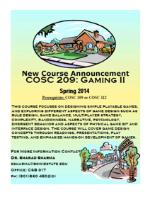

COSC 209: Gaming II
Spring Semester 2014 Course Information Instructor:
Dr. Sharad
Sharma E-MAIL: ssharma@bowiestate.edu CLASS
HOURS:Thursday:
4:55 PM to 7:25 PM, CSB 312 |
 |
Required Text
Adams, E. (2010). Fundamentals of Game Design, 2nd Edition, Addison-Wesley / Prentice Hall. ISBN-10: 0321643372.
Reference Book(s):
COURSE DESCRIPTION
This course focuses on designing simple playable games, each exploring different aspects of game design such as rule design, game balance, multiplayer strategy, complexity, randomness, narrative, psychology, emergent behavior and aspects of physical game bit and interface design. The course will cover game design concepts through readings, presentations, play testing, and emphasize hands-on development of games.
Prerequisite: COSC 109 or COSC 112
Course Related Links
* Syllabus
* Coding Style
* Assignments
Source Code for Encounter Video game
ENCOUNTER TEST EVALUATION REPORT
Weekly Time Schedule
| Date | Topics | Chapters | Assignments |
| 30-Jan |
Introduction:Games and Video Games |
Chapter 1 | |
| 6-Feb |
Design Components and Processes |
Chapter 2 | |
| 13-Feb |
Game Concepts |
Chapter 3 |
|
| 20-Feb |
Game Worlds |
Chapter 4 | |
| 27-Feb |
Creative and Expressive Play |
Chapter 5 | Assignment 3 |
| 6-March |
Character Development |
Chapter 6 | |
| 13-March |
Mid
Term Exam
|
Chapter 7 | |
| 20-March |
Spring Break |
|
|
| 27-March |
Storytelling and Narrative | ||
| 3-April |
User Interfaces |
Chapter 8 | |
| 10-April |
Gameplay |
Chapter 9 |
|
| 17-April |
Core Mechanics and Game Balancing |
Chapter 10 & 11 | |
| 24-April |
General Principles of Level Design |
Chapter 12 | |
| 1-May |
Geners of games |
Chapter 13 |
|
| 8-May | Project Demo and Presentation | ||
| 15-May |
Final
Exam
|
|
STUDENT EXPECTED OUTCOMES:
Student will be able to:
EVALUATION: Following is the Evaluation system for the Final Grade. Each assignment will be graded. Students are responsible for completing them as scheduled.
Game Project, Mid-term and Final exams are mandatory. Participation in class is very important. I expect the class to be interactive, just as games are.
Assignments: Three Assignments will be given prior to Mid-Term Exam. Assignment will cover the topics: Games and Video Games, Design Components and Processes, Game Concepts, Game Worlds, Creative and Expressive Play. Two Assignments will be given after the Mid-Term Exam. It will include game programming assignments and will focus on General Principles of Level Design.
Final Project:The purpose of the course project is to provide the students with the knowledge of Game theory and the skills to apply it. The students will be exposed to the process of modeling and programming the game as a group project. Groups of 2 to 4 students will select a topic of their choice and submit a project proposal for evaluation and approval by the teaching staff. The designated audience of the project will be peers and the University community. The project topics are determined by the creativity and imagination of the students. The project must include:
GRADING: Academic dishonesty will result in grade F. The following grade scale will be used:
90 % - 100% = A
80 % - 89% = B
70 % - 79% = C
60 % - 69% = D
0 - 59% = F
Final grades will be computed based upon credits earned for all the five components mentioned above.
App inventor
Building your first app with an Android phone (Part 1): HelloPurr
Installing and Running the Emulator in AI2
USEFUL LINKS
Graphics
Virtual Functions
Virtual Functions
Polymorphism
Introduction to Polymorphism in C++
Introduction to Eclipse Video